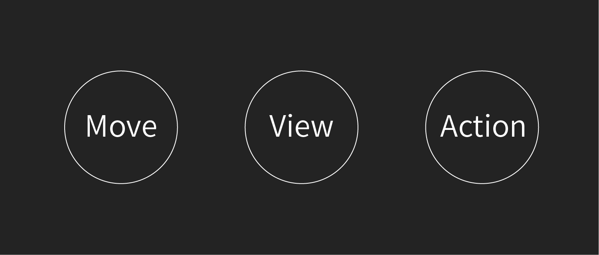

컴포넌트
컴포넌트는 사용자와 상호작용하는 기본적인 형태로 어느 공간에서도 기능을 수행할 수 있는 최소한의 단위입니다. 디자인 원자(Atoms)들로 구성되며 사용자의 반응과 행동을 고려해야합니다. 반복적으로 사용되어 사용자에게 익숙한 컴포넌트가 있으며 목적을 위해 재구성되거나 새로 만들어지는 컴포넌트가 있습니다.

종류
현실과 마찬가지로 사용자는 스크린 속의 공간을 이동하고 대상을 보고 행동합니다. 컴포넌트는 사용자가 각 단계에서 목적을 달성할 수 있도록 최적화됩니다. Move는 공간을 정의하고 이동하기 위한 컴포넌트입니다. View는 특정 영역에서 정보를 보기 위한 컴포넌트입니다. Action는 사용자가 정보를 받아들인 다음 취해야할 행동을 위한 컴포넌트입니다.

- Move: 네비게이션, 메뉴, 탭
- View: 카드, 리스트, 그리드 리스트, 서브헤드, 익스팬션 패널, 스테퍼, 분리선, 표, 다이얼로그
- Action: 버튼, 툴바, 바텀 시트, 슬라이드바, 텍스트 필드, 라디오버튼, 픽커
컴포넌트 만들기
컴포넌트가 어떻게 구성되는지 알아보기 위해 영화 컨텐츠를 제공하는 서비스에 쓰일 컴포넌트를 디자인할 때를 가정해보겠습니다. 가장 많이 쓰이게될 영화 컨텐츠 썸네일을 어떻게 보여줄지에 대한 내용입니다.
- 목적 (Purpose): 비슷한 컨텐츠 구분하고 선택하기
- 흐름 (Flow): 다른 것과 구분 > 재생 > 자세히 보기
- 형태 (Types): 이미지, 제목, 아이콘, 아이콘
- 행동 (Action): 터치
재료 고르기
최종 목적인 '선택하기'를 달성하기 위해 사용자에게 필요한 정보가 무엇인지를 정의합니다. 제목, 감독, 배우, 장르 등 영화를 구분할 수 있는 정보는 많습니다. 이 중 어떤 정보가 사용자가 컨텐츠를 선택하는데 가장 큰 영향을 끼치는지 판단해야합니다. 행동을 유도할 수 있는 시각적 단서들을 고릅니다.
- 다른 것과 구분: 포스터, 영화제목, 감독
- 재생, 자세히 보기: 재생 아이콘, 더보기 아이콘
형태 짜기
사용할 정보를 정한 뒤 시각적으로 배치합니다. 작은 단위인 컴포넌트가 차지하는 영역이 넓으면 페이지 전체에 영향을 끼칠 수 있기 때문에 영역을 최대한 절약해야합니다. 현재 컴포넌트는 주된 요소인 포스터의 형태가 직사각형 형태이기 때문에 정보의 배치도 직사각형으로 구성합니다.
불필요한 것 빼기
사용자가 행동하는데 방해가 될만한 시각적 요소를 최대한 제거합니다. 구분을 위한 선은 네모 이미지로 충분히 구분이 되므로 삭제.